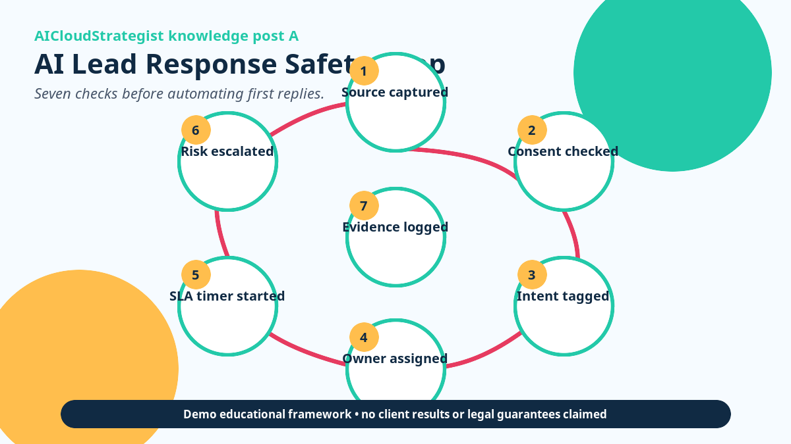

AICloudStrategist daily knowledge post A • Safe AI lead-response operations for clinics and SMB teams
AI Lead Response Safety Loop: 7 Checks Before You Automate First Replies
Fast replies help only when ownership, consent, escalation, source tracking, and human review are already clear. Automate the loop, not the confusion.

Public knowledge note
Fast replies help only when ownership, consent, escalation, source tracking, and human review are already clear. Automate the loop, not the confusion.
- Source captured: Keep form, call, chat, and campaign source visible through the handoff.
- Consent checked: Confirm the message channel and opt-in rule before automation runs.
- Intent tagged: Separate enquiry, support, booking, pricing, complaint, and urgent-risk paths.
- Owner assigned: Every automated first response should create a named human next step.
- SLA timer started: Measure response ageing before adding more traffic or ad spend.
- Risk escalated: Route medical, legal, payment, identity, or angry-customer cases to humans.
- Evidence logged: Store timestamps, source, handoff, and outcome for weekly review.
Practical takeaway: Use this as a demo checklist before connecting AI to web forms, WhatsApp, or CRM queues.
Proof boundary
Demo educational framework. No client results, patient-growth numbers, legal guarantees, or compliance status claimed.